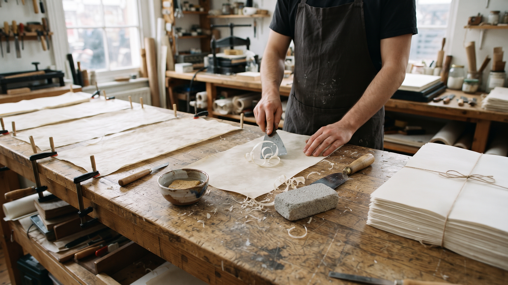

cma-credential-sanitizer
The Scraping Bench. A command line sanitizer that removes secrets from command history files and Jupyter notebooks by rewriting them in place. The knife lifts the value out of the line and the line itself stands: the key name, the quotes, and the shape of every entry stay where they were.

File typesbash, zsh, powershell, and jupyter, chosen with -t
PatternsAssignments for api_key, password, secret, and access_token, and bearer tokens; only the captured value becomes REDACTED
BackupOff by default; --backup writes a timestamped .bak at 0600 holding the removed secrets in clear
DependenciesStandard library only; requirements.txt is empty
Usage
python3 main.py -t bash python3 main.py -f /path/to/my/file.txt python3 main.py -a python3 main.py -t jupyter -d /path/to/notebooks python3 main.py -t bash -r custom_regexes.txt
The README's preserved usage line is a placeholder that runs nothing; the run lines above stand in its flagged completion section, retargeted to the real entry point main.py and labelled as retargeted there. Default places looked: ~/.bash_history, ~/.zsh_history, and ~/Documents/WindowsPowerShell/PSReadLine/ConsoleHost_history.txt, with notebooks found by recursive search from the current directory when no directory is named.
| Option | What it does |
|---|---|
-t, --filetype | Choose the type of file to sanitize: bash, zsh, powershell, or jupyter. |
-f, --filepath | The specific file path to sanitize. Overrides --filetype if provided. |
-d, --directory | A directory to recursively search for Jupyter notebooks. Only applies when --filetype is jupyter. |
-a, --all | Sanitize all supported file types, with notebooks searched recursively in the current directory. |
-r, --regex_file | A file of custom regular expressions, one per line. |
--backup | Write a timestamped .bak copy of each original first, at owner only permissions (0600). Off by default. |
-h | Show help message and exit. |

Stated limits
- Every file is rewritten whether anything matched or not, and reading drops bytes that are not valid UTF-8, so a history file with damaged or foreign encoding comes back normalised and silently shorter. Sanitising a live history file also races the shell still appending to it.
- Only the captured value is replaced: a pattern with no capture group has its whole match replaced instead. A worked line from the README, a plainly fictional placeholder: api_key = "fictional-example-value" comes back as api_key = "REDACTED".
- In notebooks, code and markdown cell sources and code cell outputs, in their text, their data values, and their tracebacks, are redacted with each source's string or list shape kept, and the whole notebook is then reserialised at indent 1 whatever its original formatting was, so a diff of the result shows a whole file rewrite and cannot show what was actually redacted.
- Passing --directory without --filetype jupyter is rejected with exit 1, because the directory search only applies to notebooks. With no action flag at all the tool prints its help and exits 1, and an --all run never checks the per file results, so a missing history file in that mode is logged inside the run and then covered by a closing line saying sanitization is complete.
- The backup is credential material in its own right: it contains the removed secrets in clear text, at owner only permissions.